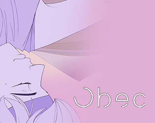
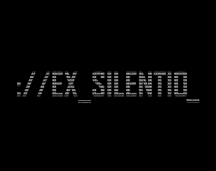
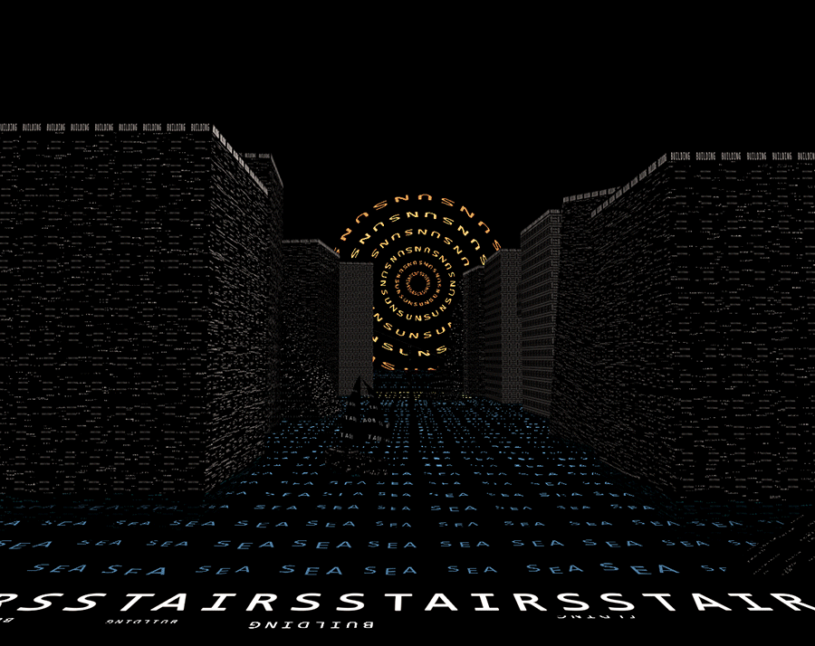
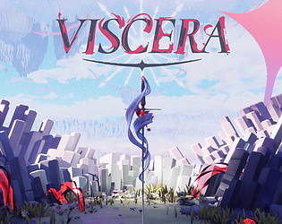

I am currently doing an internship in Apperture, where I contribute to the development of serious games as a gameplay programmer. This internship is part of my Master's degree in programming at Cnam-Enjmin, from which I will officially graduate in August.
I’ve gained hands-on experience in gameplay programming both at school and professionally. Notably, I spent a year at Sentry Games, where I worked on the game OBEC.
Feel free to explore my projects below — they showcase my journey and long-standing passion for game development!







CoStellation is the result of a 3 and a half day workshop whose objective was to create an interactive experience whose inputs would be basic (keyboard, mouse, joystick) but whose outputs would not be limited to a computer screen.


It was realized in 4 days as part of our Master's degree curriculum at CNAM-ENJMIN